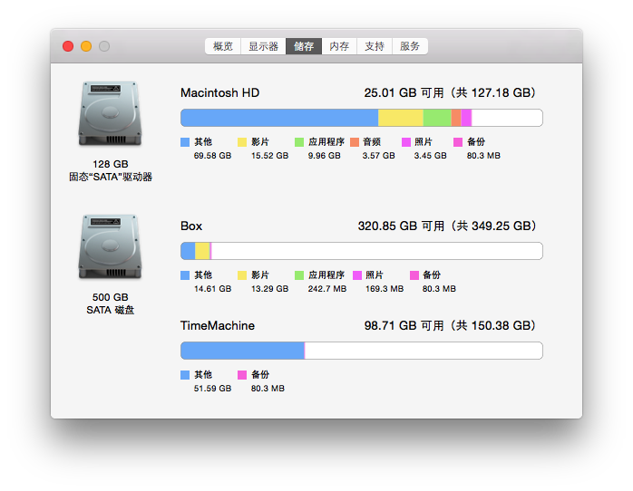

mac-macbook 存储空间中的其他是什么
最近，我的电脑运行起来很慢，实在是无法忍受了，点击左上角的苹果图标 > 关于本机，可以查看“存储”，我现在的情况如下：

可以看到“其他”这一项在整个存储中占据了很大一部分，那么其他到底是什么呢？又应该如何来清理 mac 的存储空间，释放一些可以利用的空间呢？google 一下，马上知道！
通过 google 我们可以找到苹果官网关于“其他”的说明和定义，以及如何进行磁盘空间的清理。
第一篇文章讲解的是“其他”可能包含的内容，第二篇文章讲解的是如何释放磁盘空间。
官网列出了“其他”可能包含的内容：
- OS X 文件夹中的项目，如系统文件夹和缓存
- 个人信息，如文稿、通讯录、日历数据
- App 插件或扩展功能
- 由于位于软件包内而无法被 Spotlight 归类为介质文件的介质文件
- Spotlight 无法识别的文件类型
关于如何释放磁盘空间，参阅上面的第二个链接即可。
以上是苹果官网推荐的清理磁盘空间的方式，通过查阅网络还发现两个软件，对于释放磁盘空间，清理内存有很大的帮助，一个是OmniDiskSweeper，一个是Dr.Cleaner。这两个软件我都下载亲测了，还是很有帮助的。第一个会将所有的文件按照从大到小的顺序给你排列好，这样就需要你自己判断哪些大文件对你而言是无用的，进而手动删除这些文件释放磁盘空间。所以第一个用起来会稍微费劲一点。而第二个则是直接清除一些缓存文件或者优化内存。